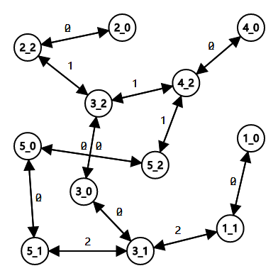

题目链接
A - Jelly
Solution
非常裸的三维bfs。
仅仅只是从经典的四连通变成了六连通然后跑个最短路就可以了。
一开始想用dfs搞，然后发现可能走的不是最短路。于是乖乖地去写bfs去了。
时间复杂度$O(n^3)$
Code
1
2
3
4
5
6
7
8
9
10
11
12
13
14
15
16
17
18
19
20
21
22
23
24
25
26
27
28
29
30
31
| #include<bits/stdc++.h>
using namespace std;
char a[101][101][101];
int dis[101][101][101];
const int fx[6][3] = {{-1, 0, 0}, {1, 0, 0}, {0, -1, 0}, {0, 1, 0}, {0, 0, -1}, {0, 0, 1}};
int main() {
ios::sync_with_stdio(false), cin.tie(0), cout.tie(0);
int n; cin >> n;
memset(dis, 0xff, sizeof dis);
for(int i = 0; i < n; i++) {
for(int j = 0; j < n; j++) {
cin >> a[i][j];
}
}
queue<tuple<int, int, int>> q;
q.push(make_tuple(0, 0, 0));
dis[0][0][0] = 1;
while(!q.empty()) {
int x, y, z; tie(x, y, z) = q.front();
q.pop();
for(int i = 0; i < 6; i++) {
const int nx = x + fx[i][0], ny = y + fx[i][1], nz = z + fx[i][2];
if(nx < 0 || nx >= n || ny < 0 || ny >= n || nz < 0 || nz >= n) continue;
if(dis[nx][ny][nz] == -1 && a[nx][ny][nz] == '.') {
dis[nx][ny][nz] = dis[x][y][z] + 1;
q.push(make_tuple(nx, ny, nz));
}
}
}
cout << dis[n - 1][n - 1][n - 1] << '\n';
}
|
B - 「木」迷雾森林
Solution
一个非常经典的简单动态规划。即
$$
dp[i][j]=(dp[i-1][j]+dp[i][j-1])\cdot (1-a[i][j])
$$
$dp[i][j]$表示走到第$i$行第$j$列个格子有多少种不同的方案。
不过这题是从左下角移动到右下角，那么只需要先读入最后一行然后倒数第二行最后再读入第一行即可变成想要的样子。
他说需要快读于是写了个快读不知道是不是真的要。
时间复杂度$O(n\cdot m)$
Code
1
2
3
4
5
6
7
8
9
10
11
12
13
14
15
16
17
18
19
20
21
22
23
24
25
26
27
28
29
| #include<bits/stdc++.h>
using namespace std;
int dp[3005][3005];
bool a[3005][3005];
int read() {
char c = getchar();
int ret = 0;
while(!isdigit(c)) c = getchar();
while(isdigit(c)) {
ret = ret * 10 + c - '0';
c = getchar();
}
return ret;
}
int main() {
int n = read(), m = read();
for(int i = n; i >= 1; i--) {
for(int j = 1; j <= m; j++) {
a[i][j] = read();
}
}
dp[1][1] = 1;
for(int i = 1; i <= n; i++) {
for(int j = 1; j <= m; j++) {
if(!a[i][j]) dp[i][j] = (dp[i][j] + dp[i - 1][j] + dp[i][j - 1]) % 2333;
}
}
cout << dp[n][m] << '\n';
}
|
C - 小雨坐地铁
Solution
这五个题当中最难的题也是最有有意思的题。非常像网络流问题里面需要自己建图的问题。这个题很显然是转换成最短路问题用dijkstra来求解。
首先我们知道把每一个车站都当成一个点是不好做的。因为在同一个车站实际上有不同的状态，比如说在地铁x号线和在地铁y号线的同一个车站的状态是不一样的。然后根据这种做法，总共就有$\sum\limits_{i=1}^{m}c_i$个点。
但是仅仅这些点，对于换乘操作需要每两条线路建立一条边，可能需要建$O(n\cdot m^2)$条边，这样肯定是不行的。
解决的方法就是对于每一个车站再建立一个点作为中转点，即不在任何线路的车站的点。那么换乘的时候，花费$0$从地铁上下来，再花费$a_i$进入到地铁$i$号线。
对于同一个地铁线路的车站，编号为$i$，只需要相邻车站建立一条双向边花费$b_i$即可。
对于点的标号而言，对于每一个车站都需要一个中转点，那么中转点的编号就是车站的编号会更好处理，那么结果就是从$s$到$t$的最短路。对于地铁线路中的点而言，采用动态开点的方式即可。这样总共的点为$n+\sum\limits_{i=1}^{m}c_i$，根据建图方式单向边不会超过$4\cdot(n+\sum\limits_{i=1}^{m}c_i)$条。
然后跑一个dijkstra就能得出结果了。
对于这个超级简单的样例而言就会把图建成这样（不太会画而画出了bug）

时间复杂度$O(n+\sum\limits_{i=1}^{m}c_i)$
Code
1
2
3
4
5
6
7
8
9
10
11
12
13
14
15
16
17
18
19
20
21
22
23
24
25
26
27
28
29
30
31
32
33
34
35
36
37
38
39
40
41
42
43
44
45
46
47
48
49
50
51
| #include<bits/stdc++.h>
using namespace std;
const int N = 101010, M = 101010;
struct edge {
int v, w, nxt;
} G[M << 2];
int h[N], tot, dis[N];
void addedge(int u, int v, int w) {
G[tot] = {v, w, h[u]}; h[u] = tot++;
}
int main() {
ios::sync_with_stdio(false), cin.tie(0), cout.tie(0);
memset(h, 0xff, sizeof h);
memset(dis, 0x3f, sizeof dis);
int n, m, s, t; cin >> n >> m >> s >> t;
dis[0] = 0;
int cp = n;
addedge(0, s, 0);
for(int i = 0; i < m; i++) {
int a, b, c, lst; cin >> a >> b >> c;
for(int j = 0; j < c; j++) {
int d; cin >> d; ++cp;
addedge(d, cp, a);
addedge(cp, d, 0);
if(j != 0) {
addedge(lst, cp, b);
addedge(cp, lst, b);
}
lst = cp;
}
}
typedef pair<int, int> pii;
priority_queue<pii, vector<pii>, greater<pii>> q;
q.push({0, 0});
while(!q.empty()) {
const int u = q.top().second;
const int d = q.top().first;
q.pop();
if(d > dis[u]) continue;
if(t == u) break;
for(int i = h[u]; ~i; i = G[i].nxt) {
const int v = G[i].v, w = G[i].w;
if(d + w < dis[v]) {
dis[v] = d + w;
q.push({dis[v], v});
}
}
}
if(dis[t] == 0x3f3f3f3f) cout << "-1\n";
else cout << dis[t] << '\n';
}
|
D - 表达式求值
Solution
这道题可以用更简单的方式来做，但是我就是要强行搞复杂。
我是用中缀表达式转换了后缀表达式之后然后计算的。从中缀表达式转换成后缀表达式的过程：
- 先准备一个数组或者队列存放结果（这个数组除了可以存数字还可以存运算符），以及一个用于临时存放运算符的栈。
- 从左遍历字符串，如果是数字无条件放入结果数组中。
- 如果是左括号，则无条件放入栈中。
- 如果是右括号，则一直将栈顶中运算符取出放入队列中，直至遇到左括号，左括号不用存。
- 如果是其他符号，重复下列操作直至不满足条件：若栈不为空且栈顶运算符优先级比当前符号小或者等于将栈顶运算符取出放入队列中。然后将当前运算符放入栈中。（左括号优先级要最低，否则就这个操作左括号就进结果里面了）
然后后缀表达式变成结果的方式就很简单了。用一个栈来存放临时的数。从队列中拿到的是数的话就直接放进栈中，如果是运算符，则从栈中拿出两个数做运算符的操作然后放回栈中。同时要注意操作符顺序，原来在中缀表达式中右边的数是在栈顶。
本题经过转换之后就做完了。（要是不搞这么复杂早做完了）
时间复杂度$O(n)$
Code
1
2
3
4
5
6
7
8
9
10
11
12
13
14
15
16
17
18
19
20
21
22
23
24
25
26
27
28
29
30
31
32
33
34
35
36
37
38
39
40
41
42
43
44
45
46
47
48
49
50
51
52
53
54
55
56
57
58
59
60
61
62
63
64
65
66
67
68
69
70
71
72
73
74
75
76
77
78
79
80
81
82
83
84
85
86
87
| #include<bits/stdc++.h>
using namespace std;
namespace rpn {
typedef long long rpn_type;
struct node {
int what;
rpn_type val;
node(int _what = 0, rpn_type _val = 0) : what(_what), val(_val) {}
};
rpn_type calc(int what, const rpn_type &a, const rpn_type &b) {
if(what == 1) return (a + b) % 10000;
if(what == 2) return a - b;
if(what == 3) return a * b % 10000;
if(what == 4) return a / b;
assert(false);
}
const int LeftBucket = -114514, RightBucket = -1919810;
int toWhat(const char c) {
switch(c) {
case '(': return LeftBucket;
case ')': return RightBucket;
case '+': return 1;
case '-': return 2;
case '*': return 3;
case '/': return 4;
}
assert(false);
}
rpn_type solve(const string &str) {
const int n = str.size();
queue<node> Queue;
stack<int> Stack;
for(int i = 0; i < n; i++) {
if(isdigit(str[i])) {
rpn_type cur = 0;
int j = i;
while(isdigit(str[j])) {
cur = cur * 10 + str[j] - '0';
j++;
}
i = j - 1;
Queue.push(node(0, cur));
} else {
const int cur = toWhat(str[i]);
if(cur == LeftBucket) {
Stack.push(cur);
} else if(cur == RightBucket) {
while(Stack.top() != LeftBucket) {
Queue.push(node(Stack.top()));
Stack.pop();
}
Stack.pop();
} else {
while(!Stack.empty() && Stack.top() >= cur) {
Queue.push(node(Stack.top()));
Stack.pop();
}
Stack.push(cur);
}
}
}
while(!Stack.empty()) {
Queue.push(node(Stack.top()));
Stack.pop();
}
stack<rpn_type> forCalc;
while(!Queue.empty()) {
const node cur = Queue.front();
Queue.pop();
if(cur.what) {
const rpn_type b = forCalc.top(); forCalc.pop();
const rpn_type a = forCalc.top(); forCalc.pop();
forCalc.push(calc(cur.what, a, b));
} else {
forCalc.push(cur.val);
}
}
return forCalc.top();
}
}
int main() {
ios::sync_with_stdio(false), cin.tie(0);
string str; cin >> str;
cout << rpn::solve(str) % 10000 << '\n';
}
|
E - Sunscreen
一道奶牛题，先翻译一下。
题意：有$n$头奶牛，每一头奶牛只能接受区间$[minSPF_i, maxSPF_i]$的SPF rating。然后现在有$m$种东西，每一种东西的SPF rating是$SPF_i$，而这种东西有$cover_i$个。每一个东西只能用于一个奶牛，问最多能让多少头奶牛能够接受。
Solution
贪心的思想，这个东西给任何奶牛用的贡献都是1，所以需要尽可能多地制造贡献，让需求最苛刻的奶牛先用上即可。
那么将$n$头奶牛对于$minSPF_i$进行排序，然后将这$m$种东西也进行排序。
用一个优先队列来存$minSPF_i$已经满足条件了的$maxSPF_i$，最苛刻的奶牛即$maxSPF_i$小的奶牛。
遍历排序后的$m$种东西，对于所有$minSPF_i \le SPF_i$的奶牛的$maxSPF_i$加入优先队列中，然后对于所有在优先队列中$maxSPF_i < SPF_i$的退出优先队列。此时在优先队列中的都是满足条件的，那么只要将$maxSPF_i$小的先满足即可完成。
时间复杂度$O(n\log(n)+m\log(m))$
Code
1
2
3
4
5
6
7
8
9
10
11
12
13
14
15
16
17
18
19
20
21
22
23
24
25
26
27
28
29
30
| #include<bits/stdc++.h>
using namespace std;
int main() {
ios::sync_with_stdio(false), cin.tie(0), cout.tie(0);
int n, m; cin >> n >> m;
vector<pair<int, int>> cow(n), bot(m);
for(int i = 0; i < n; i++) {
cin >> cow[i].first >> cow[i].second;
}
for(int i = 0; i < m; i++) {
cin >> bot[i].first >> bot[i].second;
}
sort(cow.begin(), cow.end());
sort(bot.begin(), bot.end());
int ans = 0;
priority_queue<int, vector<int>, greater<int>> q;
for(int i = 0, j = 0; i < m; i++) {
while(j < n && cow[j].first <= bot[i].first) {
q.push(cow[j].second);
j++;
}
while(!q.empty() && q.top() < bot[i].first) q.pop();
while(!q.empty() && bot[i].second) {
q.pop();
ans++;
bot[i].second--;
}
}
cout << ans << '\n';
}
|
回到开头